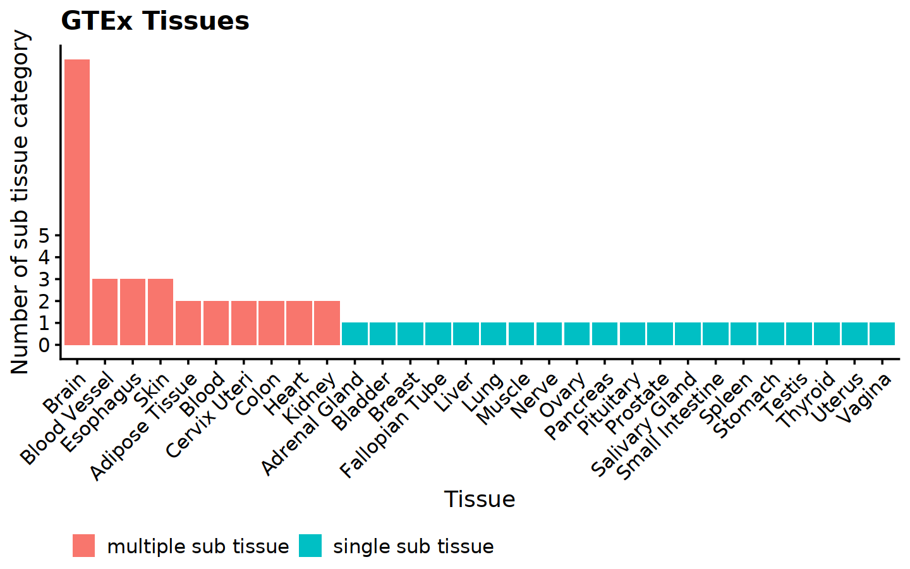

GTEx subjects, samples by tissue summary
GTEx
summary
Number of sub tissue category by tissue
Some tissues have more than 1 tissue types, e.g. Brain has 13 sub tissues.
Number of subjects per tissue (sub tissue)
| type | SMTS | SMTSD | N |
|---|---|---|---|
| <chr> | <chr> | <chr> | <int> |
| single sub tissue | Muscle | Muscle - Skeletal | 803 |
| single sub tissue | Thyroid | Thyroid | 653 |
| single sub tissue | Nerve | Nerve - Tibial | 619 |
| single sub tissue | Lung | Lung | 578 |
| single sub tissue | Breast | Breast - Mammary Tissue | 459 |
| single sub tissue | Testis | Testis | 361 |
| single sub tissue | Stomach | Stomach | 359 |
| single sub tissue | Pancreas | Pancreas | 328 |
| single sub tissue | Pituitary | Pituitary | 283 |
| single sub tissue | Adrenal Gland | Adrenal Gland | 258 |
| single sub tissue | Prostate | Prostate | 245 |
| single sub tissue | Spleen | Spleen | 241 |
| single sub tissue | Liver | Liver | 226 |
| single sub tissue | Small Intestine | Small Intestine - Terminal Ileum | 187 |
| single sub tissue | Ovary | Ovary | 180 |
| single sub tissue | Salivary Gland | Minor Salivary Gland | 162 |
| single sub tissue | Vagina | Vagina | 156 |
| single sub tissue | Uterus | Uterus | 142 |
| single sub tissue | Bladder | Bladder | 21 |
| single sub tissue | Fallopian Tube | Fallopian Tube | 9 |
| type | SMTS | SMTSD | N |
|---|---|---|---|
| <chr> | <chr> | <chr> | <int> |
| multiple sub tissue | Adipose Tissue | Adipose - Subcutaneous | 663 |
| multiple sub tissue | Adipose Tissue | Adipose - Visceral (Omentum) | 541 |
| multiple sub tissue | Blood | Whole Blood | 755 |
| multiple sub tissue | Blood | Cells - EBV-transformed lymphocytes | 174 |
| multiple sub tissue | Blood Vessel | Artery - Tibial | 663 |
| multiple sub tissue | Blood Vessel | Artery - Aorta | 432 |
| multiple sub tissue | Blood Vessel | Artery - Coronary | 240 |
| multiple sub tissue | Brain | Brain - Cortex | 255 |
| multiple sub tissue | Brain | Brain - Caudate (basal ganglia) | 246 |
| multiple sub tissue | Brain | Brain - Nucleus accumbens (basal ganglia) | 246 |
| multiple sub tissue | Brain | Brain - Cerebellum | 241 |
| multiple sub tissue | Brain | Brain - Cerebellar Hemisphere | 215 |
| multiple sub tissue | Brain | Brain - Frontal Cortex (BA9) | 209 |
| multiple sub tissue | Brain | Brain - Putamen (basal ganglia) | 205 |
| multiple sub tissue | Brain | Brain - Hypothalamus | 202 |
| multiple sub tissue | Brain | Brain - Hippocampus | 197 |
| multiple sub tissue | Brain | Brain - Anterior cingulate cortex (BA24) | 176 |
| multiple sub tissue | Brain | Brain - Spinal cord (cervical c-1) | 159 |
| multiple sub tissue | Brain | Brain - Amygdala | 152 |
| multiple sub tissue | Brain | Brain - Substantia nigra | 139 |
| multiple sub tissue | Cervix Uteri | Cervix - Endocervix | 10 |
| multiple sub tissue | Cervix Uteri | Cervix - Ectocervix | 9 |
| multiple sub tissue | Colon | Colon - Transverse | 406 |
| multiple sub tissue | Colon | Colon - Sigmoid | 373 |
| multiple sub tissue | Esophagus | Esophagus - Mucosa | 555 |
| multiple sub tissue | Esophagus | Esophagus - Muscularis | 515 |
| multiple sub tissue | Esophagus | Esophagus - Gastroesophageal Junction | 375 |
| multiple sub tissue | Heart | Heart - Left Ventricle | 432 |
| multiple sub tissue | Heart | Heart - Atrial Appendage | 429 |
| multiple sub tissue | Kidney | Kidney - Cortex | 85 |
| multiple sub tissue | Kidney | Kidney - Medulla | 4 |
| multiple sub tissue | Skin | Skin - Sun Exposed (Lower leg) | 701 |
| multiple sub tissue | Skin | Skin - Not Sun Exposed (Suprapubic) | 604 |
| multiple sub tissue | Skin | Cells - Cultured fibroblasts | 504 |
Number of samples per individual
The number of samples per individual is not the same across tissues.
- single sub tissue: 1 sample per individual
- multiple sub tissues: 1 sample per sub tissue per individual
Table Table 3 shows that each subject within a certain sub tissue type have 1 sample. Thus it is safe to run leafcutter on subject ID per tissue type.
| type | SMTS | SMTSD | maxNSampPerSubj |
|---|---|---|---|
| <chr> | <chr> | <chr> | <int> |
| single sub tissue | Muscle | Muscle - Skeletal | 1 |
| single sub tissue | Uterus | Uterus | 1 |
| single sub tissue | Vagina | Vagina | 1 |
| single sub tissue | Breast | Breast - Mammary Tissue | 1 |
| single sub tissue | Salivary Gland | Minor Salivary Gland | 1 |
| single sub tissue | Adrenal Gland | Adrenal Gland | 1 |
| single sub tissue | Thyroid | Thyroid | 1 |
| single sub tissue | Lung | Lung | 1 |
| single sub tissue | Spleen | Spleen | 1 |
| single sub tissue | Pancreas | Pancreas | 1 |
| single sub tissue | Stomach | Stomach | 1 |
| single sub tissue | Small Intestine | Small Intestine - Terminal Ileum | 1 |
| single sub tissue | Prostate | Prostate | 1 |
| single sub tissue | Testis | Testis | 1 |
| single sub tissue | Nerve | Nerve - Tibial | 1 |
| single sub tissue | Pituitary | Pituitary | 1 |
| single sub tissue | Ovary | Ovary | 1 |
| single sub tissue | Liver | Liver | 1 |
| single sub tissue | Fallopian Tube | Fallopian Tube | 1 |
| single sub tissue | Bladder | Bladder | 1 |
For multi sub category tissue types, it is not safe to run leafcutter on subject ID per tissue type. Because multiple sub tissue category corresponds to the same individual. For example, subject GTEX-1117F has 1 sample in Brain-Cerebellum and 1 sample in Brain-Cortex, see Table 4 and Table 4. It is safe to run leafcutter on subject ID per sub tissue type though.
| type | SMTS | SMTSD | maxNSampPerSubj |
|---|---|---|---|
| <chr> | <chr> | <chr> | <int> |
| multiple sub tissue | Adipose Tissue | Adipose - Subcutaneous | 1 |
| multiple sub tissue | Adipose Tissue | Adipose - Visceral (Omentum) | 1 |
| multiple sub tissue | Blood Vessel | Artery - Tibial | 1 |
| multiple sub tissue | Blood Vessel | Artery - Coronary | 1 |
| multiple sub tissue | Blood Vessel | Artery - Aorta | 1 |
| multiple sub tissue | Heart | Heart - Atrial Appendage | 1 |
| multiple sub tissue | Heart | Heart - Left Ventricle | 1 |
| multiple sub tissue | Skin | Skin - Not Sun Exposed (Suprapubic) | 1 |
| multiple sub tissue | Skin | Skin - Sun Exposed (Lower leg) | 1 |
| multiple sub tissue | Skin | Cells - Cultured fibroblasts | 1 |
| multiple sub tissue | Brain | Brain - Cortex | 1 |
| multiple sub tissue | Brain | Brain - Cerebellum | 1 |
| multiple sub tissue | Brain | Brain - Frontal Cortex (BA9) | 1 |
| multiple sub tissue | Brain | Brain - Caudate (basal ganglia) | 1 |
| multiple sub tissue | Brain | Brain - Nucleus accumbens (basal ganglia) | 1 |
| multiple sub tissue | Brain | Brain - Putamen (basal ganglia) | 1 |
| multiple sub tissue | Brain | Brain - Hypothalamus | 1 |
| multiple sub tissue | Brain | Brain - Spinal cord (cervical c-1) | 1 |
| multiple sub tissue | Brain | Brain - Hippocampus | 1 |
| multiple sub tissue | Brain | Brain - Anterior cingulate cortex (BA24) | 1 |
| multiple sub tissue | Brain | Brain - Cerebellar Hemisphere | 1 |
| multiple sub tissue | Brain | Brain - Substantia nigra | 1 |
| multiple sub tissue | Brain | Brain - Amygdala | 1 |
| multiple sub tissue | Esophagus | Esophagus - Muscularis | 1 |
| multiple sub tissue | Esophagus | Esophagus - Mucosa | 1 |
| multiple sub tissue | Esophagus | Esophagus - Gastroesophageal Junction | 1 |
| multiple sub tissue | Colon | Colon - Sigmoid | 1 |
| multiple sub tissue | Colon | Colon - Transverse | 1 |
| multiple sub tissue | Blood | Whole Blood | 1 |
| multiple sub tissue | Blood | Cells - EBV-transformed lymphocytes | 1 |
| multiple sub tissue | Kidney | Kidney - Cortex | 1 |
| multiple sub tissue | Kidney | Kidney - Medulla | 1 |
| multiple sub tissue | Cervix Uteri | Cervix - Ectocervix | 1 |
| multiple sub tissue | Cervix Uteri | Cervix - Endocervix | 1 |
| type | SMTS | maxNSampPerSubj |
|---|---|---|
| <chr> | <chr> | <int> |
| multiple sub tissue | Adipose Tissue | 2 |
| multiple sub tissue | Blood Vessel | 3 |
| multiple sub tissue | Heart | 2 |
| multiple sub tissue | Skin | 3 |
| multiple sub tissue | Brain | 13 |
| multiple sub tissue | Esophagus | 3 |
| multiple sub tissue | Colon | 2 |
| multiple sub tissue | Blood | 2 |
| multiple sub tissue | Kidney | 2 |
| multiple sub tissue | Cervix Uteri | 2 |